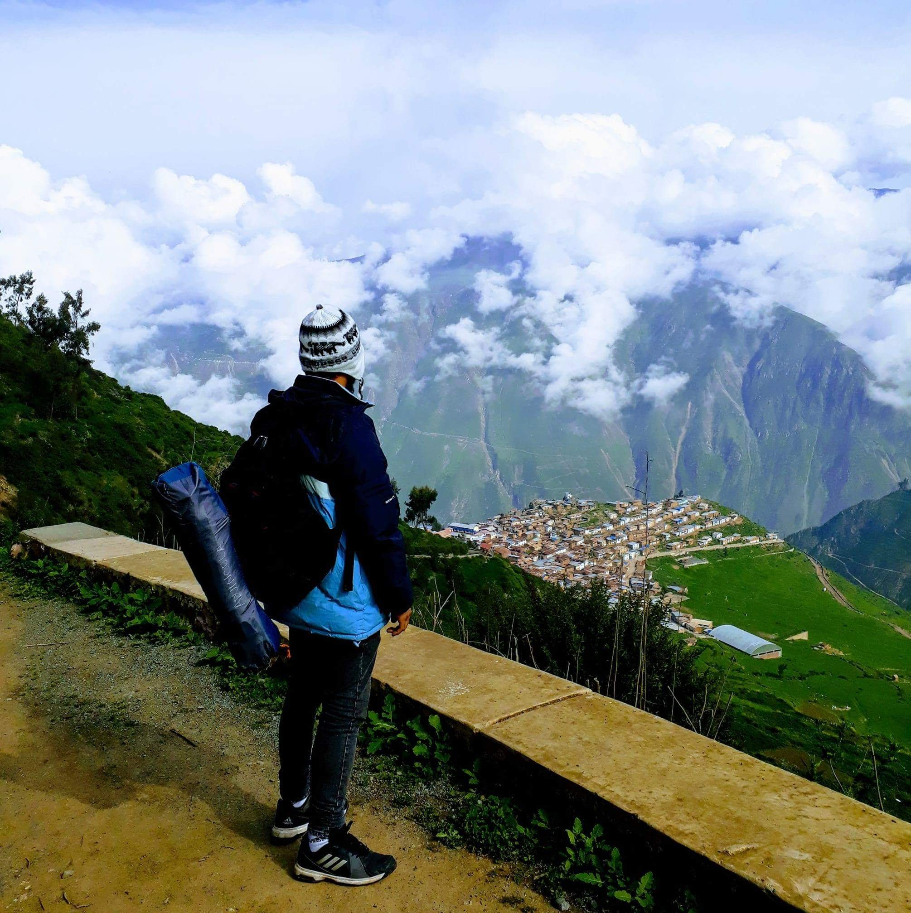

I am a Ph.D. student in Physics at the University of Houston, currently working as a Research Assistant in the Hosur Group, based in the Department of Physics and the Texas Center for Superconductivity.
My current research focuses on theoretical condensed matter physics, particularly quantum many-body theory, topological quantum matter, and anomalous transport phenomena. I am also interested in quantum field theory in causally restricted domains, with emphasis on the emergence of thermality, information-theoretic structures, and their connections to quantum gravity.
- La Guerrera - The Elva Morua de Rodriguez Scholarship, University of Houston, 2026-2027.
- Student Ambassador, American Physical Society (APS), 2026-2027.
- Lydia Mendoza Fellowship, University of Houston, 2024-2026.
- Presidential Fellowship, University of Houston, 2023-2025.
- 1st Place, Quantum Computing Fall Fest, University of Houston, 2023.
- Ranked 1st in cohort, HEP section, M.Sc. in High Energy Physics, ICTP-EAIFR/University of Rwanda.
- Ranked 1st in cohort, B.Sc. in Physics, Universidad Nacional Mayor de San Marcos.
- Research Scholarship, UNMSM Vice-Chancellor's Office, 2018.
- Teaching Assistant, University of Houston, 2023-2025. Quantum Mechanics; Quantum Mechanics II; Physics Laboratory.
Selected articles and presentations are listed below in reverse chronological order.
-
Thermodynamics and mechanical laws of causal-diamond horizonsCarlos R. Ordóñez and Gustavo Valdivia-Mera.
-
Area-Information Trade-Offs in Acceleration Radiation from Atoms Falling into Black HolesYusef Maleki, Gustavo Valdivia-Mera, Carlos R. Ordóñez, Horacio E. Camblong, and Marlan O. Scully.
-
Acceleration radiation and HBAR thermodynamics for atoms falling into a BTZ black hole: A CQM quantum-optics approachH. E. Camblong, A. Chakraborty, C. R. Ordóñez, M. O. Scully, G. Valdivia-Mera, and H. Wang.
-
The Helical SYK Model and Emergent Infrared IntegrabilityGustavo Valdivia-Mera, Bhavay Tyagi, Eric R. Bittner, and Pavan Hosur.
-
Thermal nature of the causal diamond horizon: A hidden property of the inertial propagatorNada Eissa, Carlos R. Ordóñez, and Gustavo Valdivia-Mera.
-
Horizon brightened acceleration radiation entropy in causal diamond geometry: A near-horizon perspectiveNada Eissa, Carlos R. Ordóñez, and Gustavo Valdivia-Mera.
-
Path integral derivation of the thermofield double state in causal diamondsAbhijit Chakraborty, Carlos R. Ordóñez, and Gustavo Valdivia-Mera.
-
On the Unruh effect and the thermofield double stateGustavo Valdivia-Mera.
-
Strange Metals and Black Holes: A Holographic CorrespondenceResearch Day, Department of Physics, University of Houston, Houston, TX, USA.
-
Thermal Nature of the Causal Diamond HorizonTINKUY 2026: "Un Panorama de la Física Teórica en el Perú", Lima, Peru.
-
Towards HBAR in the causal diamond near horizonIQSE Summer School on Quantum Science, Texas A&M University, Casper, WY, USA.
-
Near-horizon (conformal) aspects of black holes and the universality (robustness) of HBAR entropyAMO/IQSE Seminar, Texas A&M University, College Station, TX, USA.
-
Path integral derivation of the thermofield double state in causal diamondsAPS Global Physics Summit, Anaheim, CA, USA.
Theoretical Physics Resources
These resources include lecture-style notes and structured study programs on selected topics in theoretical physics. They are updated periodically. If you find typos or have comments, please contact me at aremaividlav@gmail.com.
-
AdS/CFT and Holographic DualityExtended Graduate Program
-
Theoretical Condensed MatterStage 1: Physical Foundations, Scales, and Effective Descriptions
Elsewhere
Elsewhere is a collection of personal projects, photographs, notes, and guides on subjects beyond physics.
-
A Map for Listening to Classical MusicWorks, periods, genres, performances, and routes for exploration.
Curriculum Vitae
A PDF version of my CV is available below. You can also open it in a new tab.